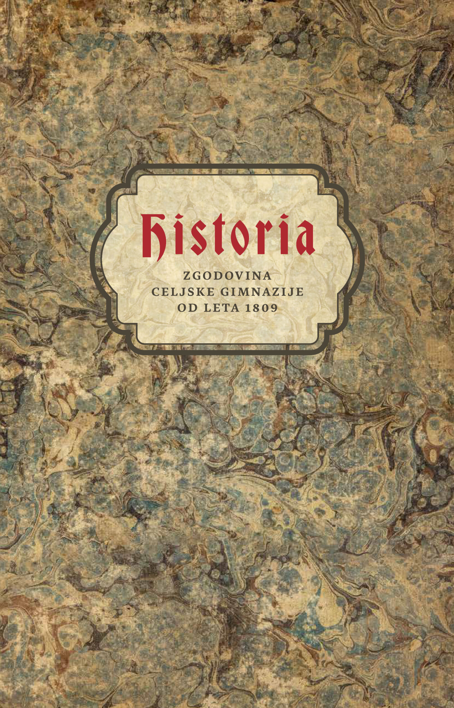

1Zgodovinopisje svoje tekste išče in proizvaja na različne načine. Zgodovino pišejo zmagovalci in tisti na njihovih plačilnih listah, zgodovina se skriva v detajlih literarnih besedil, v kamnu z letnico, ki leži ob cesti, (kot naša kronika) na policah arhivov. Zgodovino pišemo, ker imamo do tega veselje, ker nočemo, da se dobro pozabi, ker nočemo, da se slabo ponovi. Zato, ker se nam zdi, da je to naše poslanstvo – ali pa zgolj naša službena dolžnost. Prav to so po besedah Igorja Grdine anali celjske gimnazije: po službeni dolžnosti pisana kronika.
2Zakaj torej prevesti/izdati knjigo, v katero so vpisovali dogodke na celjski gimnaziji skozi dobršen del 19. stoletja? Priznam, da mi beseda kronika ne sproža prav zanimivih asociacij in pravzaprav ne vem, zakaj bi tako knjigo vzel v roke z drugačnim ciljem, kot je iskanje nekega točnega podatka o dogodku iz kateregakoli leta si že bodi. Pa vendar … ko sem dobil v roke kroniko celjske gimnazije, me je prevzela iskrena radovednost do njene vsebine v celoti. Gre za čudovit tiskarski izdelek velikega formata s kakovostnim oblikovanjem in odličnimi reprodukcijami slik in posameznih strani izvirne kronike. Poleg tega sem se z zgodovino gimnazije, predvsem njene stavbe, kot gimnazijec ukvarjal tudi sam. Ne nazadnje so moja gimnazijska leta tekla prav na tej šoli in, kar je še pomembneje, gimnazijska leta mnogih znanih Celjanov. Človek se sploh težko ukvarja z zgodovino Celja zadnjih dvesto let, ne da bi tako ali drugače trčil ob gimnazijo.
3Prevod in izdaja kronike celjske gimnazije je torej za zgodovinarje, radovedneže, Celjane – drznem si dodati še bibliofile – nadvse dobrodošla. Kroniko so od začetka (1809) do šolskega leta 1826/1827 pisali v latinščini, potem pa do konca (1880/1890) v nemščini. Prevajalca, Aleksander Žižek za nemški del in Matej Hriberšek za latinskega, sta opravila odlično delo. Posebej dragocene so opombe med besedilom, ki jih je pripravil Žižek in bralca seznanjajo z manj znanimi osebnostmi, ki se pojavijo v kroniki, pojasnjujejo nekatera jezikovno zahtevnejša mesta ali besedilo opremljajo z dodatnimi drobci iz (zgodovinskega) konteksta.
4Knjiga se začne s spremnimi teksti. Preberemo lahko uvodni besedili Boruta Batagelja in Antona Šepetavca, trenutnega ravnatelja gimnazije, ki ves čas svojega ravnateljevanja podpira ohranjanje spomina na zgodovino najstarejše in mnogo let edine celjske srednje šole in si prizadeva zanj. Aleksander Žižek je v poglavju Gimnázija -e ž (á) podal oris starejše zgodovine gimnazij na Slovenskem in zgodovine celjske gimnazije za obdobje, ki ga zajema kronika. Pregled je sicer kratek in jedrnat, a se zdi, da je avtor izbral in poglobljeno nanizal ravno tiste podatke, ki jih bralec potrebuje za razumevanje kronike.
5Če nam Žižek v svojem spremnem poglavju poda zadovoljiv zgodovinski kontekst, nam Igor Grdina v svojem poglobljenem razmišljanju ponudi odgovor na vprašanje, ki sem si ga postavil tri odstavke nazaj, zakaj torej sploh kronika. V izvrstnem zapisu nas seznani z vsebino, ki jo je kar težko stlačiti pod pokrov ene besedne zveze, sam ga je sicer skromno naslovil Zgodbe minulih let, lahko pa bi mu pridali podnaslov »kratka zgodovina občutenja časa«. Popelje nas namreč od mitološke vladavine Kronosa (ki je uvodna in sklepna misel zapisa) preko grških in rimskih piscev do srednjeveških renesans in končno do prelomnic, ki jih vidi v humanistični in protestantski misli. Rdeča nit Grdinovega zapisa je zgodovina kronik in letopisov, na katero naveže tudi pričujočo kroniko celjske gimnazije. Premisleka vreden je njegov poudarek o avtorju kronike, ki z izbiro zabeleženih dogodkov »izpričuje, koliko je slednji sin okolja, v katerem živi«. Kronika gimnazije poleg podatkov o vsakokratnem učiteljskem kolektivu, številu dijakov, izpitov, datumov počitnic, obiskov pomembnežev in drugih dogodkih šolskega leta ne skopari z zapisi o dogodkih, ki so se zgodili izven šole. Seveda se lahko v njej seznanimo s kar nekaj dogodki iz celjske zgodovine, vendar je, kot ugotavlja Grdina, kronist povsem izpustil sicer pomemben dogodek prihoda Južne železnice v mesto in korenito šolsko reformo iz leta 1848 omenil le mimobežno – po drugi strani pa, če vzamemo le en primer, ne pozabi leta 1824 zapisati, da je portugalski kralj Ivan VI. odpravil ustavno ureditev, njegov naslednik Peter pa jo je spet uveljavil.
6Branje kronike je torej spoznavanje celjske gimnazije, hkrati pa tudi potovanje po evropski zgodovini 19. stoletja. Razmislek o tem, kaj se je (provincialnemu) celjskemu učenjaku v določenem letu zdelo vredno zabeležiti, je vsekakor na mestu. V kroniko je vloženih tudi petnajst manjših listov, večinoma gre za stihe in kronograme, ki so jih zlagali v čast vladarjem ali ob pomembnih zgodovinskih dogodkih doma in po svetu (na primer zmagi proti Napoleonu ali obisku katere od kronanih glav).
7Sklenimo: knjigo je torej vredno vzeti v roke in ji nameniti nekaj presežnikov. Vsebina je daleč od suhoparnega popisa šolske statistike. Historia si kot pričevalka o zgodovini šolstva na Slovenskem zasluži prostor na knjižni polici, ob boku temeljnim knjigam za celjsko zgodovino 19. stoletja.